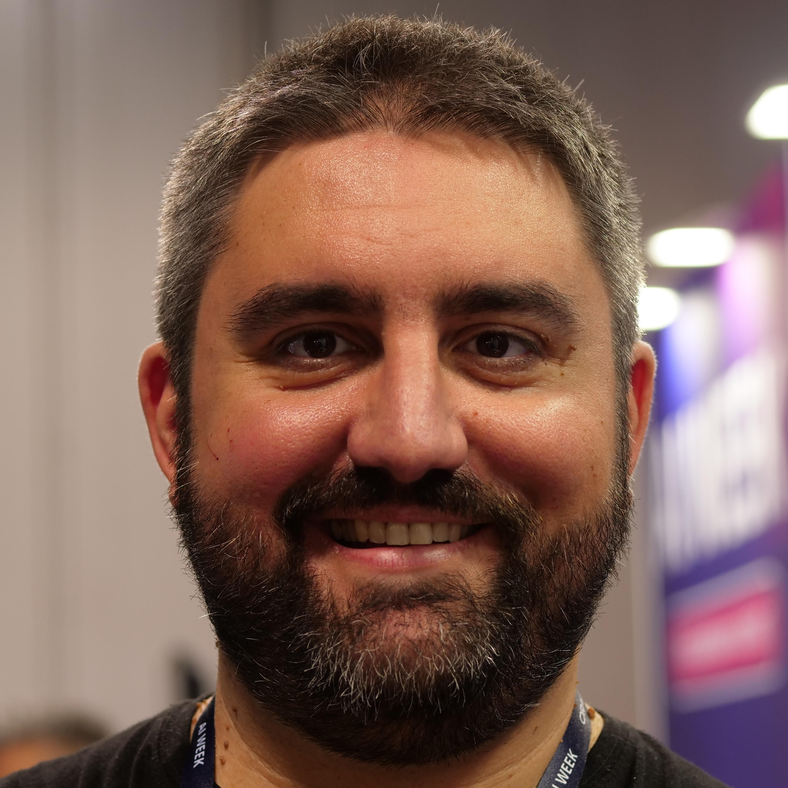
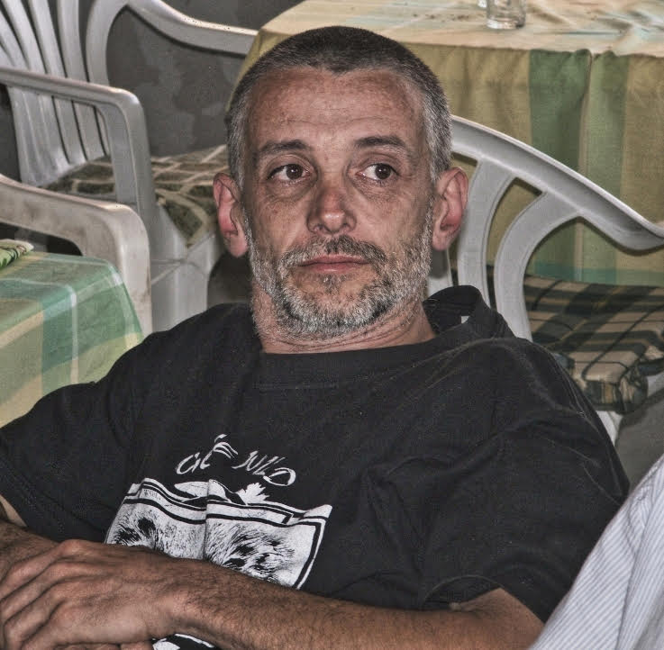
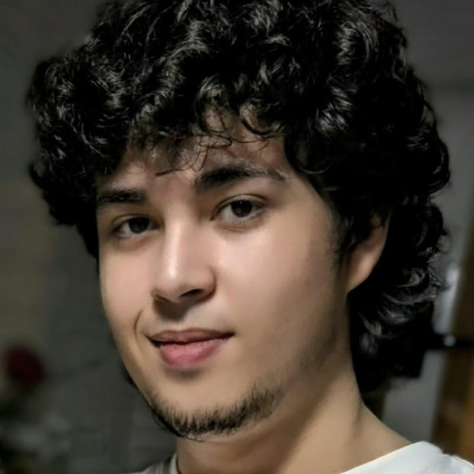

MAIN STAGE (AUDITORIUM)
student@grassi:~$ cat agenda_talks.log
Il cuore del Grassi Linux Tech Day. Scopri il programma dei seminari tenuti da professionisti del settore IT, sviluppatori, ex-studenti e docenti. Preparati a espandere le tue competenze sull'Open Source e le tecnologie emergenti.
- 09:00 Apertura Lavori
- 09:20 Giulio Sciarappa: Modelli AI Open Source e... come sfruttarli!
- 09:50 Mauro Zabot: Introduzione al mondo Linux, dal molto grande al molto piccolo
- 10:50 Davide Trivella: La versatilità di Linux
- 11:10 Prof. Matteo Patisso: "Metodi per proteggersi online (o sedicenti tali)"
- 11:40 Prof. Alessio Biondo: "Art, History, Design and Innovation"
student@grassi:~$ ./show_speakers_profiles.sh --verbose

Giulio Sciarappa
"Enterprise Architect con esperienze lavorative multiple in settori diversi, dal banking all'aerospaziale, con un pizzico di DevOps e altre metodologie meno conosciute."
In questa sessione vedremo insieme i principali strumenti per rendere la propria macchina "intelligente" e non dipendente dai vari provider. Partendo dai modelli consumer, arriveremo ad avere qualcosa di simile sulla propria macchina.

Mauro Zabot
"Agricoltore (con permessi speciali anche a noi lasciano usare i PC). Figlio d'arte, classe 1963, a 8 anni ho fatto il primo programmino in basic e giocavo con le schede perforate. Appassionato dello studio e del sapere, pasticcio un po' in tutto e cerco di non fare niente."
Preparatevi a scoprire come decenni di esperienza pratica si intrecciano con l'evoluzione dell'informatica, dalle schede perforate fino ai sistemi moderni.

Davide Trivella
"Studente presso l'Università di Torino (Dipartimento di Informatica) con solida esperienza lavorativa in ambito Software Development e DevOps."
Un talk sulla modularità di Linux. L'intervento esamina come lo stesso kernel si adatti a scenari opposti: dall'uso domestico alle VPS, mostrando come l'architettura a blocchi permetta di eliminare il superfluo per configurare un sistema su misura.
Prof. Matteo Patisso
"Docente dell'ITTS Carlo Grassi."
[ ABSTRACT NON ANCORA CARICATO NEL SISTEMA. IN ATTESA DI AGGIORNAMENTO ]
Prof. Alessio Biondo
"Docente dell'ITTS Carlo Grassi."
[ ABSTRACT NON ANCORA CARICATO NEL SISTEMA. IN ATTESA DI AGGIORNAMENTO ]